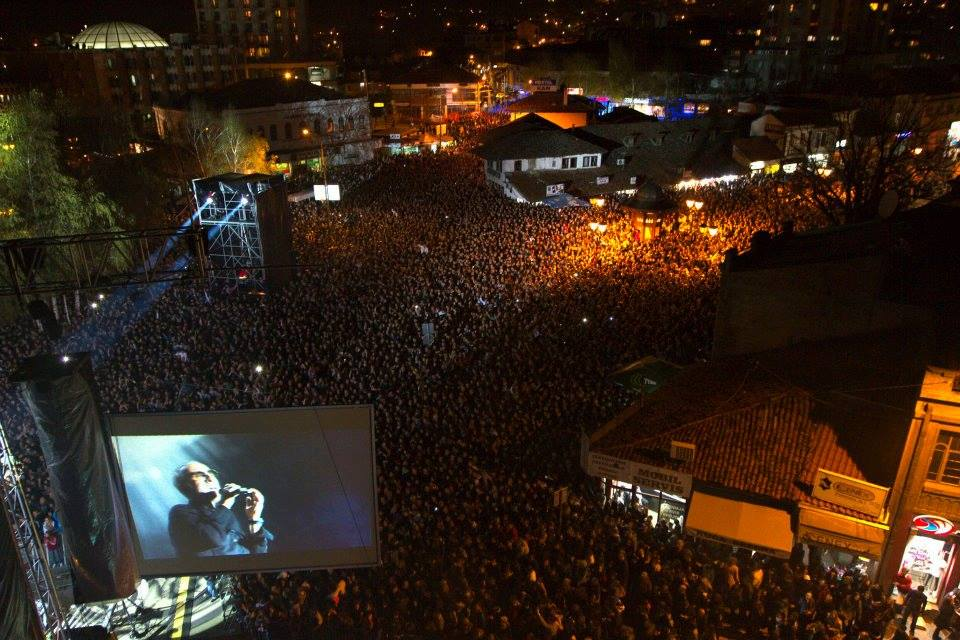

NOVI PAZAR
Možete nas naći na:


Naše pesme i pevači
U slobodno vreme oboje volimo da slusamo muziku. Pevač kojeg bi izdvojili kao zajedničkog omiljenog jeste Dino Merlin.
Merlina oboje izdvajamo iz sveta muzike, jer on nije običan pevač, on je umetnik.
On stvara muziku, piše tekstove koji mogu očarati svakog slušaoca.
Njegovi tekstovi nisu obični tekstovi, to su tekstovi koji u sebi nose poruku koja se vezuje ze realan život.
Njegove pesme mogu slušati i deca i mladi i stari, kako se još kaže od 7 do 77.
O tome svedoče njegovi brojni koncerti, na kojima prisustvuju stotine hiljada ljudi.
U našem gradu, Merlin je dva puta napravio koncerte za pamćenje,
prvi je bio 2012. godine na 551. godišnjici grada, gde je prisustvalao nekoliko desetina hiljada ljudi,
dok je drugi održan na Gradskom stadionu Novi Pazar 2016.
Pesme koje bi mi izdvojili su pesma "Sredinom" i pesma "Sve do medalje".
Ovako je to izgledalo 2012. godine:

Klikom na link ispod posetićete zvanični youtube kanal Dina Merlina.
Dino Merlin offical
Dženan voli da sluša
Moj omiljeni pevač i muzičar jeste Vlado Georgiev.
Vlado Georgiev, pevač i kompozitor, rođen je 1977. godine u Herceg Novom.
Kao muzički obrazovan i talentovan autor u poslednjih 10 godina živi i radi u Beogradu.
Sa njegovom pesmom "Žena kao ti", puno uspeha je imao mladi pevač Željko Vasić na festivalu "Budva 2001".
Razdrmao je učmalu festivalsku budvansku publiku u leto 2001. godine duetom sa Igorem Lazićem (bivši član "Montenigersa"),
otpevavši nagrađenu poletnu letnju pesmicu "Tropski bar". Potom je izdao debi album "Navika" za diskografsku kuću "Goraton" iz Podgorice.
Pojavom albuma počela je i "vladomanija". Diskografi su bili iznenađeni i zatečeni, jer je za samo mesec dana "Navika"
postala najtraženije izdaje pop muzike u zemlji. Sa albuma su se odmah izdvojili hitovi poput "Sama bez ljubavi", "Bolesni od ljubavi",
"Zbogom ljubavi", "Reci mi da znam"... Pored ovog Vlado je izdao još i album "Žena bez imena" kao i singl pred izlazak trećeg albuma "Nisam ljubomoran".
Iako ne želi da sebi postavlja rokove, publika će najverovatnije novi album hit autora i pevača moci da čuje uoči Nove godine.
Ako je suditi po novom singlu, ne treba sumnjati da će na zimu ponovo zavladati "vladomanija"!
Klikom na link ispod posetićete zvanični youtube kanal Vlada Georgieva.
Vlado Georgiev offical
Selma voli da sluša
Moja omiljena pevačica jeste Nina Badrić.
Nina sa svojim šarmom i pesničkim talentom
uspela je da zavolim njenu muziku i njene pesme. Ranije nisam toliko slušala njene pesme,
ali kada je izašao album "07", poseban utisak na mene je ostavila pesma "Dodiri od stakla", a potom i sve ostale pesme.
Svi albumi koji su izašli posle toga bili su jako dobri,i nije mi trebalo puno a da ne pevušim neku od pesama sa tih albuma.
Nikad nisam posetila nijedan njen koncert, ali na osnovu onoga što sam videla na televiziji bila sam oduševljena.
Prijatelji koji su bili prepričavali su mi detalj po detalj a ja sam sa velikim oduševljenjem upijala svaku njihovu reč,
a osecaj je bio kao da sam na koncertu. Ninu Badrić posebno gotivim zato što je žena muške pameti, ali sa druge strane dama.
Za nju je uspeh: biti zadovoljan samim sobom. Moje dve omiljene pesme od Nine su, već pomenuta, "Dodiri od stakla" i "Nebo".
Klikom na link ispod posetićete zvanični youtube kanal Nine Badrić.
Nina Badrić offical
Vrati na vrh